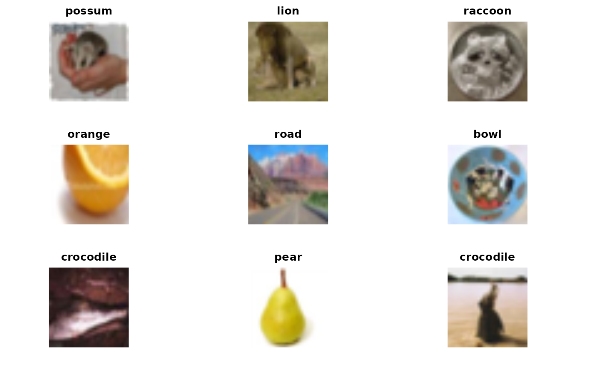
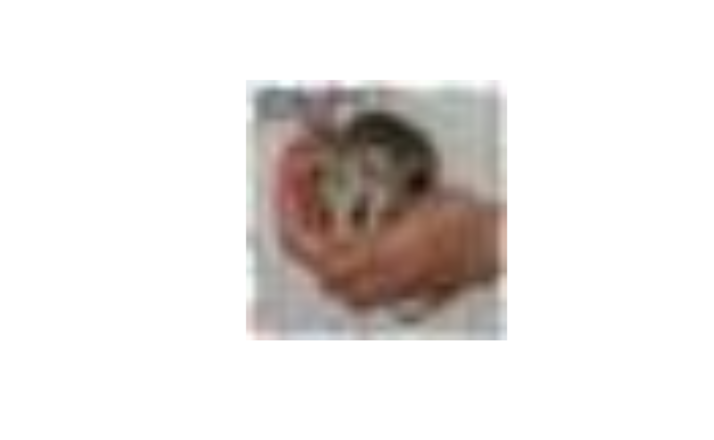
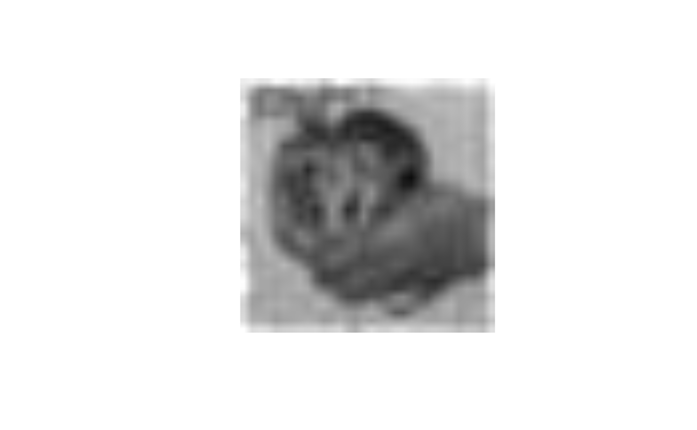
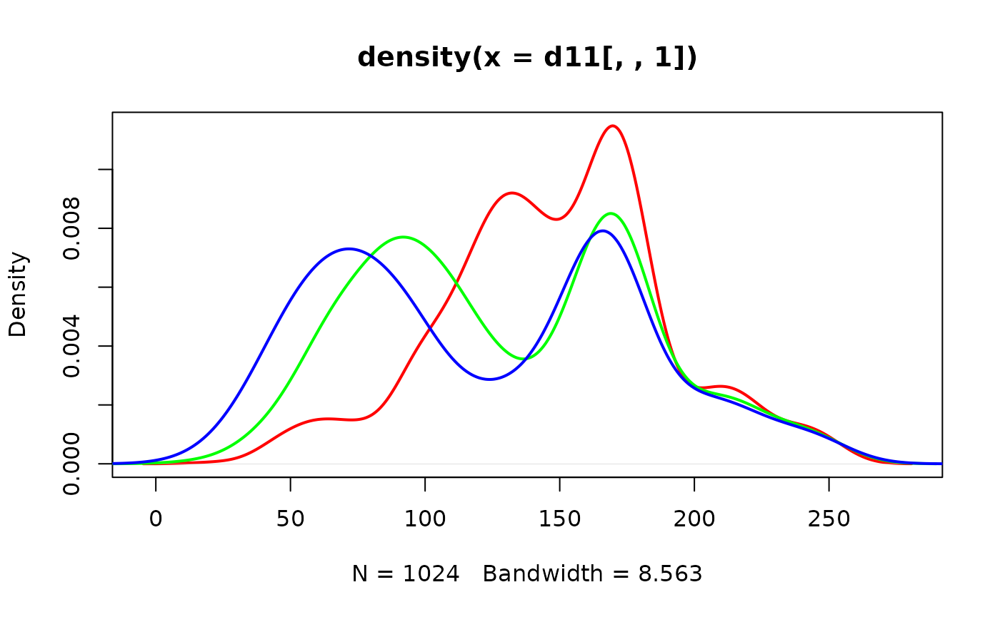

vignettes/Z1_ImageArrays.Rmd
Z1_ImageArrays.RmdFirst we set up our R session to include a package with some images. A dataset called ciftrain1k holds 1000 digital images that have been labeled.
## ImageArray instance with 1000 images, each 32 x 32 x 3
## Image types: possum lion ... caterpillar girl
## Array elements range from 0.000000 to 255.000000.We have a special function that “plots” a handful of the images.

## NULLWe’ll look more closely at the collection of images later. For now note that we can evaluate the ‘variable’ ciftrain1k
ciftrain1k## ImageArray instance with 1000 images, each 32 x 32 x 3
## Image types: possum lion ... caterpillar girl
## Array elements range from 0.000000 to 255.000000.and learn about the labels applied to various images:
getTypes(ciftrain1k)[1:9]## [1] "possum" "lion" "raccoon" "orange" "road" "bowl"
## [7] "crocodile" "pear" "crocodile"##
## apple aquarium_fish baby bear beaver
## 15 12 8 8 6
## bed
## 6We can get a single image by using [] with ciftrain1k, and extracting the numerical data as an array.
## [1] 1 32 32 3A little more manipulation allows us to visualize the possum image directly.

We get familiar with arrays of numbers when using spreadsheets like excel. The variable d11 is a numerical array made of three 32 x 32 arrays stacked on top of each other. The first array gives red intensity, the other two give green and blue respectively.
We can look at the numbers using [].
d11[1:3,1:3,]## , , 1
##
## [,1] [,2] [,3]
## [1,] 245 233 222
## [2,] 215 165 117
## [3,] 226 131 124
##
## , , 2
##
## [,1] [,2] [,3]
## [1,] 245 236 228
## [2,] 215 168 123
## [3,] 226 134 130
##
## , , 3
##
## [,1] [,2] [,3]
## [1,] 245 238 232
## [2,] 216 170 128
## [3,] 226 136 134There are 3 3x3 arrays shown here.
We can get an appreciation for the effect of color balance by setting all the array values to a common value. For example
d12 = d11
d12[,,3] = d12[,,2] # reset blue to green level
d12[,,1] = d12[,,2] # reset red to green level
d12[1:3,1:3,]## , , 1
##
## [,1] [,2] [,3]
## [1,] 245 236 228
## [2,] 215 168 123
## [3,] 226 134 130
##
## , , 2
##
## [,1] [,2] [,3]
## [1,] 245 236 228
## [2,] 215 168 123
## [3,] 226 134 130
##
## , , 3
##
## [,1] [,2] [,3]
## [1,] 245 236 228
## [2,] 215 168 123
## [3,] 226 134 130Now there are no color distinctions:

The following code produces the possum image. Change one character so that it produces the raccoon image.
d1 = getArray(ciftrain1k[1])
d11 = d1[1,,,,drop=TRUE]
writeJPEG(d11/255, "img.jpg")
show_jpg("img.jpg")The possum and raccoon images have very different color schemes. We can see the relative abundances of red, green and blue pixels in the possum image using the following:
d1 = getArray(ciftrain1k[1])
d11 = d1[1,,,,drop=TRUE]
plot(density(d11[,,1]), lwd=2, col="red")
lines(density(d11[,,2]), lwd=2, col="green")
lines(density(d11[,,3]), lwd=2, col="blue")
Questions: What do the x and y axes measure in this display?
Produce a similar display for the raccoon image. [This question addresses the use of plot, lines, and density after subsetting ciftrain1k.]
How could we produce a function that produces the density traces with input of a length-1 ImageArray?
What color intensity traces would you expect to see for the orange image?